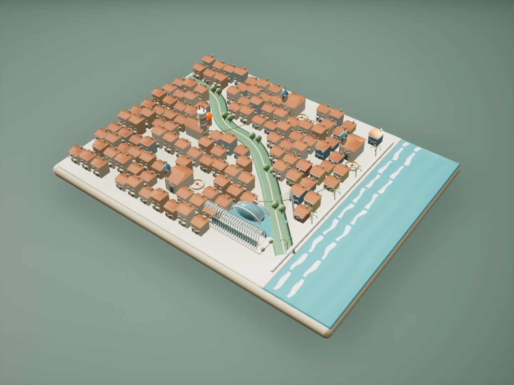
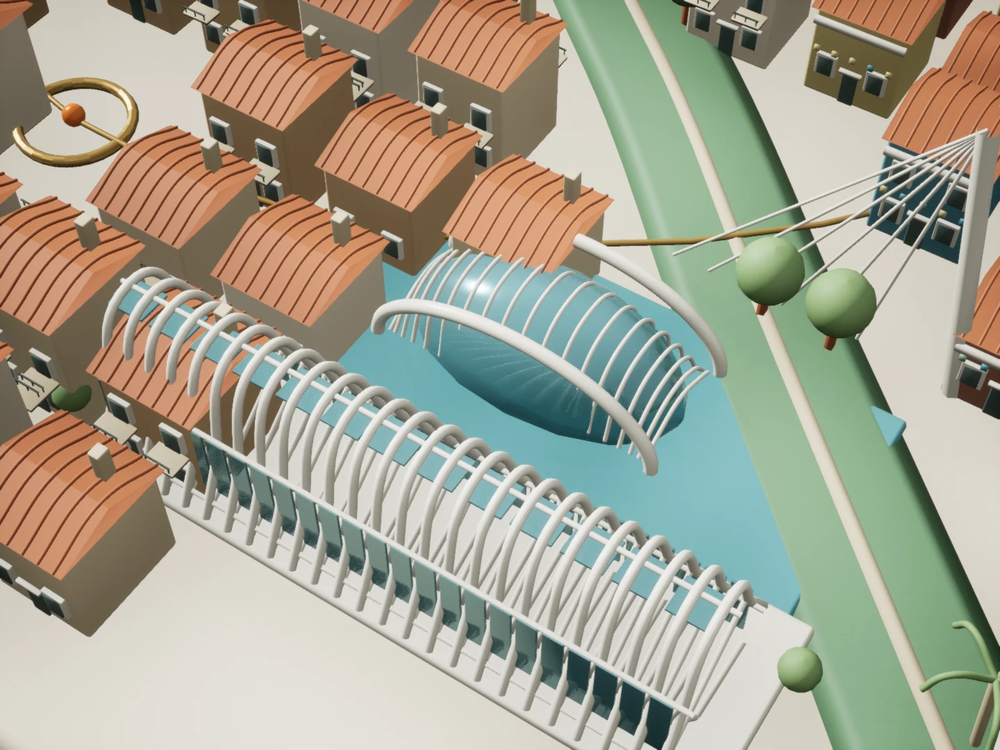

01 / Old city curiosity
El Carmen
Start with the old streets and a sense of history. Explore the city centre and make your everyday routes part of the plan.
City-centre context: actual Central Market photograph.
Moving2Valencia / A place to start
Four neighbourhood stories. One practical conversation. Explore the model, save the places that interest you, then bring your priorities to Christa Brokke.
Choose a place ↓Go to my enquiry ↗02 / The city, your way
Select a numbered stop, or play the neighbourhood tour. The photograph and talking point change with each place. Save a question for your move; the miniature is illustrative, not a navigation map.

Valencia / a miniature journeyArt-directed 3D atlas / neighbourhood positions are approximate01 / Old city curiosity
Start with the old streets and a sense of history. Explore the city centre and make your everyday routes part of the plan.
City-centre context: actual Central Market photograph.
Exploring El Carmen.

City of Arts and Sciences / architectural miniature
Individual ribs and V-shaped supports. Blue glazing, roof beams and skylights. An eye-shaped pavilion beside the reflecting water.
An original stylized interpretation, modelled in Blender and rendered in Unreal Engine.
Your chapter is yours to shape.
Two rhythms. One new chapter.
Move between the possibilities. Drag the circle, or use the arrow keys, to explore both sides of your Valencia.


Life between the milestones

A neighbourhood you know.
A table with room for friends.
A rhythm that feels like yours.
03 / A thoughtful arrival
Personal relocation support, built around the people making the move.
Your priorities, timing and questions. We begin with a conversation, then shape a practical roadmap for the move.
Neighbourhood choices, home finding and school questions. Consider your budget, commute and daily routines together.
Guidance through paperwork, registrations, banking and utilities. Your exact requirements and service scope are confirmed personally.
Orientation and support for the everyday questions that follow arrival. Make room for a life beyond your checklist.
A person, not just a process
Meet Christa Brokke. Personal guidance for finding your way into Valencia — with your priorities at the centre of the conversation.
Let’s talk about your move ↗
04 / The beginning
Tell us what you’re imagining.
We’ll help you explore how to get there.